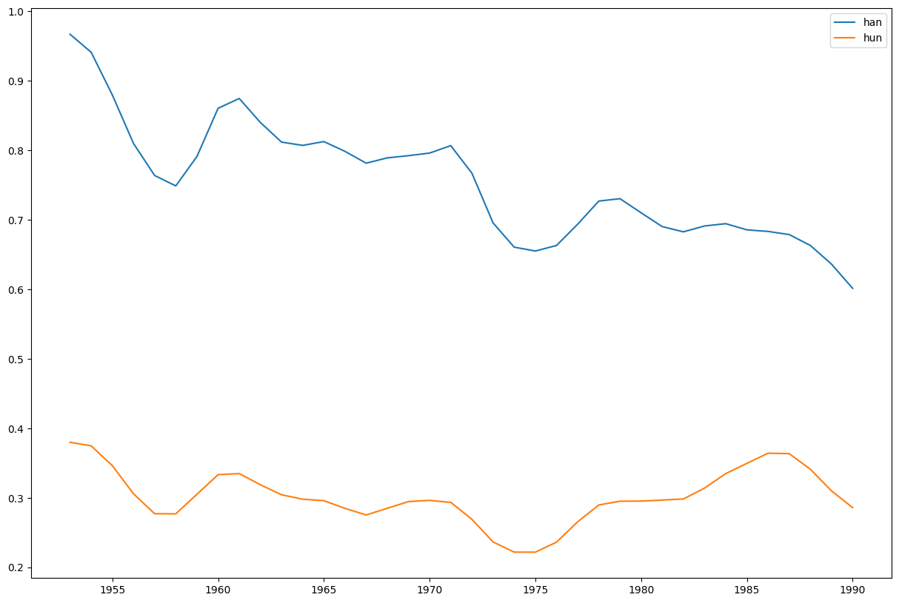
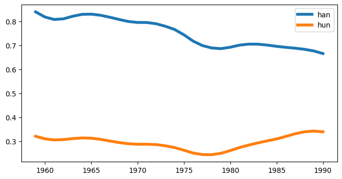
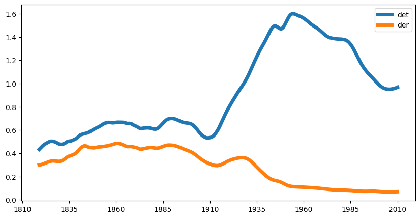
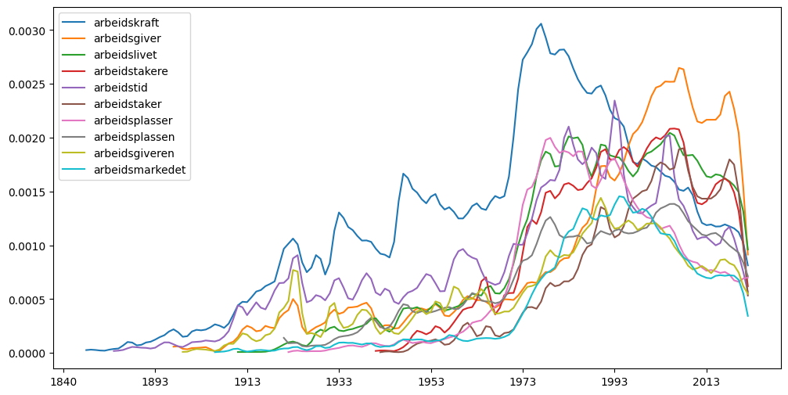
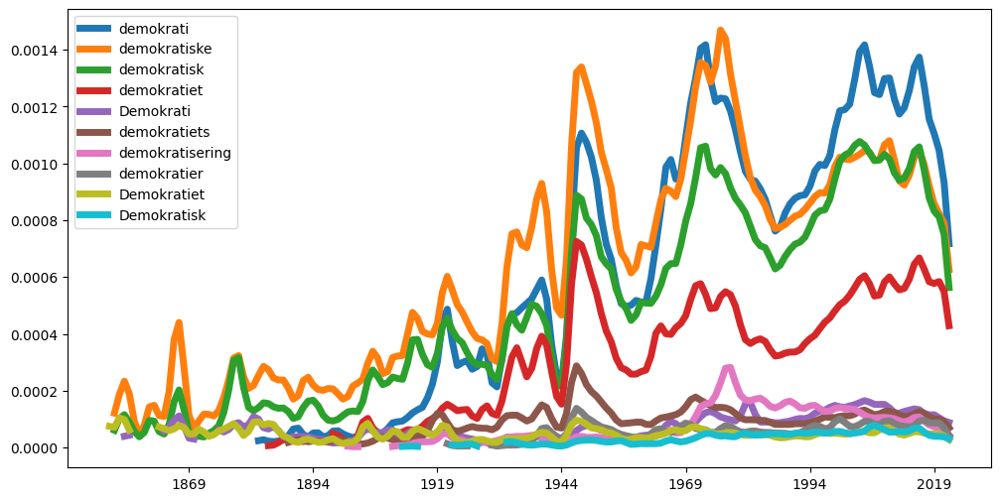
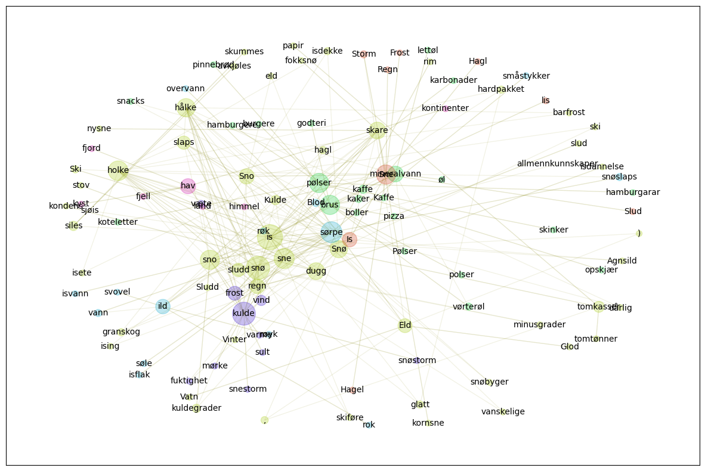

import dhlab as dh
from dhlab import Ngram, NgramBook, NgramNews
from dhlab.ngram.nb_ngram import nb_ngram
from dhlab.api.nb_ngram_api import make_word_graph
from dhlab import graph_networkx_louvain as gnl
# Ngram på 'han' og 'hun' på bøker utgitt 1950-1990
Ngram(
words=[
"han",
"hun"
],
from_year=1950,
to_year=1990,
doctype="bok"
)

# Ngram på 'han' og 'hun' på bøker utgitt 1950-1990
# Glatting, plot-type, størrelse og strektykkelse
Ngram(
words=[
"han",
"hun"
],
from_year=1950,
to_year=1990,
doctype="bok"
).plot(smooth=10, kind="line", figsize=(8, 4), lw=4)

# Adgang til N-grammet som dataramme gjennom Ngram.frame
Ngram(
words=[
"han",
"hun"
],
from_year=1950,
to_year=1990,
doctype="bok"
).frame.head()
| han | hun | |
|---|---|---|
| 1950 | 0.961575 | 0.376442 |
| 1951 | 0.990294 | 0.370878 |
| 1952 | 0.946277 | 0.390889 |
| 1953 | 0.965377 | 0.377961 |
| 1954 | 0.803514 | 0.321345 |
Ngram(
["det", "der"],
doctype="avis",
from_year=1810,
to_year=2010
).plot(smooth=10, figsize=(10, 5), lw=5)

Ngram(
["arbeids*"],
from_year=1810
).plot(figsize=(12, 6))

Ngram(
["demokrati*"],
from_year=1800
).plot(smooth=4, figsize=(12,6), lw=5)

is_graf = make_word_graph("is", corpus='all', cutoff=16, leaves=0)
gnl.show_graph(is_graf, spread=5)

gnl.show_community(is_graf)
1 Vatn, is, Ski, skiføre, nysne, slud, kondens, slaps, sno, snøbyger, barfrost, Sno, hagl, snø, fokksnø, Agnsild, isete, dugg, ski, ), dårlig, isdekke, holke, eld, ,, isdannelse, Vinter, glatt, kuldegrader, skare, papir, sludd, avkjøles, hålke, stov, sjøis, Kulde, hardpakket, regn, Eld, granskog, Sludd, ising, tomtønner, vanskelige, skummes, tomkasser, rim, siles, minusgrader, Snø, Glod, sne, kornsne, allmennkunnskaper
2 snacks, lettøl, Kaffe, brus, mineralvann, karbonader, burgere, skinker, koteletter, øl, boller, pølser, opskjær, godteri, hamburgarar, kaker, vørterøl, pizza, pinnebrød, Pølser, polser, hamburgere, kaffe
3 isflak, overvann, søle, røyk, ild, småstykker, røk, isvann, sørpe, vann, rok, Blod, snøslaps, svovel
4 kulde, snøstorm, fuktighet, frost, varme, væte, vind, snestorm, mørke, sult
5 hav, kyst, land, fjord, fjell, himmel, kontinenter
6 Sne, Frost, lis, Storm, Hagl, Is, Slud, Regn, Hagel
True